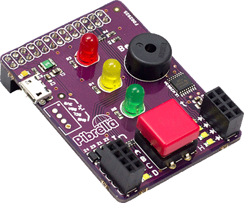
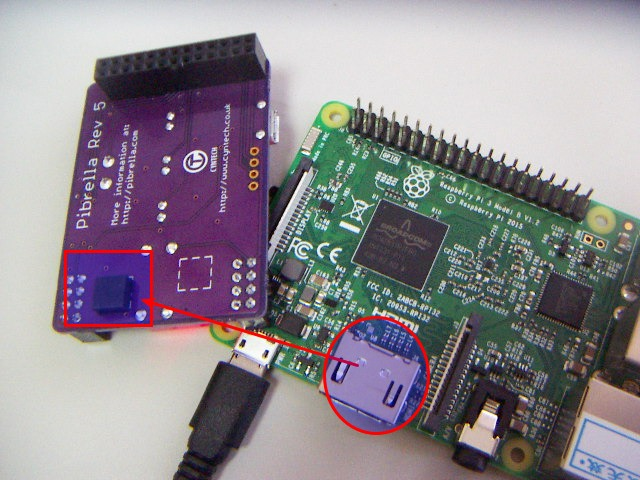
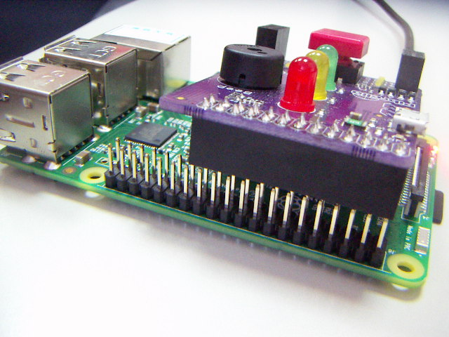

¿Qué es PIBRELLA?
Es una Shield muy sencilla que se acopla a la Raspberry en los GPIO y trae esta placa al mundo real con sencillas entradas y salidas. Esta placa se puede conseguir por unas 10 £.

¿Qué es una Shield? Mira esta página de la Shield Echidna ¿Qué es GPIO? pues eso es que no te has leído este capítulo ¿No podría pasar de la Shield y conectar los leds diréctamente? Ni pensarlo, se ve que no te has leído este capítulo
¿Qué tiene?
- Salidas tipo LED rojo, naranja y verde
- Salida un pequeño buzzer
- Entrada un interruptor
- 5 Conectores de entradas ABCD
- 5 Conectores de salida EFGH
Precauciones
Raspberry no tiene de forma nativa protecciones en sus GPIO (ya lo sabes), Pibrella ayuda a prevenir algún daño y por eso podemos conectar cosas en las entradas y salidas, no obstante:
- No podemos mezclar las entradas y las salidas.
- No podemos cortocircuitar las salidas
- No podemos conectar ninguna potencia superior a 5V.
- Y por supuesto, como en todos las placas: No utilices las tomas de corriente ( osea los enchufes 220V de la pared), excepto para conectar las fuentes de alimentación, claro.
¿Cómo se conecta?
Pegaremos la pequeña almohadilla negra que viene en el paquete para que descanse la Pibrella en el mismo conector de HDMI de la Raspberry (si fuese una Raspberry antigua, pues en el otro cuadrado, ver):

Y lo conectamos en los pines de GPIO más exteriores:

¿Qué pines de GPIO utiliza?
Pues estos:

Fuente: https://es.pinout.xyz/pinout/pibrella
¿Más información?
- En http://pibrella.com/ tienes la página oficial, donde a grandes rasgos explica qué es Pibrella y la tienda oficial donde comprarlo en https://shop.cyntech.co.uk/products/pibrella
- En http://guides.cyntech.co.uk/pibrella/pibrella/ tienes una página completa de documentación
- Muro sobre Pibrella